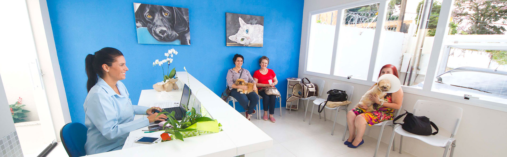

Dra Fabiana Quartieroo

Olá! Meu nome é Fabiana Quartiero Pereira, sou Médica Veterinária, Mestre e Doutora em Ciências Veterinárias com ênfase em Oftalmologia Veterinária pela Universidade Federal do Rio Grande do Sul (UFRGS). Sou mãe de três filhos, sendo dois deles adotados e de 4 patas: Albert (Poodle) e Sofia (SRD).
Por que escolhi oftalmologia veterinária? Tudo começou ainda na faculdade, quando um professor falava sobre as especialidades dentro da clínica e cirurgia veterinária. Então resolvi começar a estudar oftalmologia e foi amor à primeira vista (literalmente!). A partir de então direcionei todos os meus estudos, cursos, palestras e estágios para esta área.
Prestei atendimento clínico e cirúrgico somente na área de Oftalmologia Veterinária no Hospital de Clínicas Veterinárias da UFRGS de 2007 a 2013. Atualmente, presto atendimento oftalmológico clínico e cirúrgico em Porto Alegre-RS